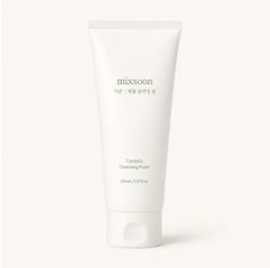
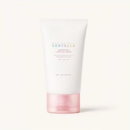
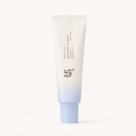

Mockups con las 3 fotos reales que tengo hoy (Rutina Express Piel Grasa: limpiador, crema y protector solar). Los textos y los datos son los que ya salen de la rutina. Los kits de 5 productos usarían el mismo formato con más piezas. La idea 5 solo muestra el guion de la sesión, no fotos reales de la sesión.
Los productos reales sobre una "mesa" redonda, en abanico, con su número. Todo en el color de la necesidad.



123Se arma solo: el tema ordena las fotos según la cantidad (2, 3, 4 o 5).
Cada producto como un sticker con borde blanco, número y paso. Distintas inclinaciones, sombra dura como el resto del sitio.
Es automático. El nombre del paso sale de las etiquetas del producto.
Una caja dibujada con los productos asomando. La tapa abierta lleva el nombre de la rutina. Sirve como primera foto, "todo en una caja".
Un dibujo base para todas. Cambian los productos, el color y el nombre de la tapa.
La galería pasa de 2 a N+1 fotos: primero el conjunto y después una por producto, con el paso, el momento de uso y su beneficio corto.
Todo sale de datos que ya cargamos (paso, momento de uso, beneficio corto). Para mostrarlo con colores distintos por foto, o con un solo color de la rutina, basta un ajuste.
Fotos reales hechas por ustedes, siempre con la misma receta. Aquí solo se ve el guion, con las fotos que tengo de ejemplo. Las tomas 2 y 3 se hacen en la sesión.
Fondo de color, productos de más bajo a más alto sobre una peana blanca.
Una gota real de cada producto bajo su envase. Las gotas de aquí son solo guía.
Un producto en mano, siempre el mismo encuadre y fondo.
No se arma sola: la receta se repite en cada rutina o kit nuevo. Es la que más cuesta, pero la que más sube la calidad con el tiempo.